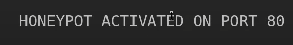

In this activity we will be using pentbox in kali, it's important to note that pentbox is not usually preinstalled in kali linux but installing it was super simple
you just have to go to Technicaldata's Github and clone his GIT repo, however there are a lot of different versions of Pentbox and a lot of different forks which caused a lot of confusion as to which one the lecture material was referencing, however i went with the most popular one and it worked just fine, we open our app by using CD and going to the location of which we installed pentbox and running the script, here's what it looks like when we open it:
We select number 2
We select option 3 which is honeypot

I chose the automatic config here for sake of convinience
Here we get a confirmation that it's activated
after putting my computer's locan IP followed by the port 80 in a web browser we get this:
now if we go back to our Terminal we get this:
We have successfully made and used a honeypot on ourselves here, now there are a couple of things i would like to touch on,
i believe this, in theory is great, however there are easier ways to do this that doesn't require you to use Kali at all, reducing the time and skill needed to make an actual honeypot, all you have to do is to go to any IP grabber website such as grabify, it could also redirect the user to a real website and the website URL can be changed to make it more believable, since if you are actually using this in real world people are less likely to click on 192.168.1.0:80 than to click on a link that says cutepuppies.com here's how it works, this is the home page:
We will just add any website we wish the target to be sent to after we grab their details, i'll use www.emu.edu.tr, then it asks you to customize the URL
We can change the extention to make it even more realistic
As i said, any target is more likely to click on https://imghost.pics/join.php?id=EKLY83 compared to a random IP address, also setting it up is easy, takes less than a minute, here is how the website shows you the details of someone who clicked your link
The exact same results, maybe even better, more realistic for the target since they will be redirected to an actual website and half the hassle for the person setting the trap, hope you enjoyed this experiment!
created with
Website Builder Software .